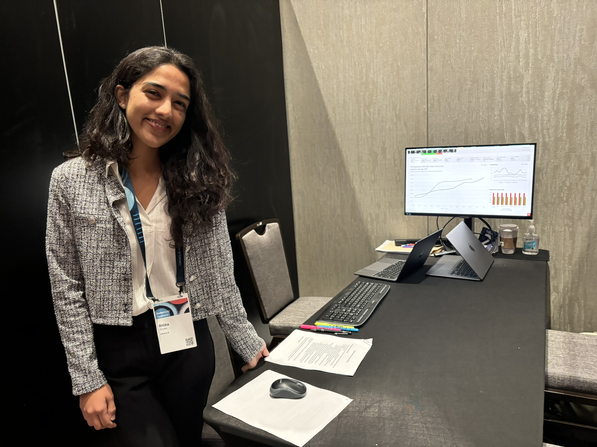
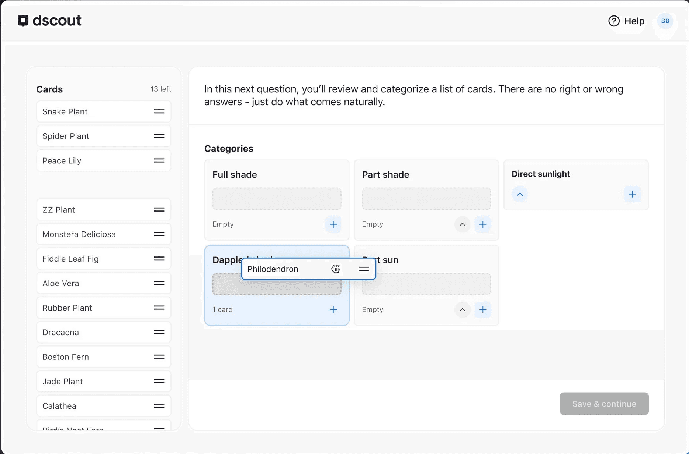
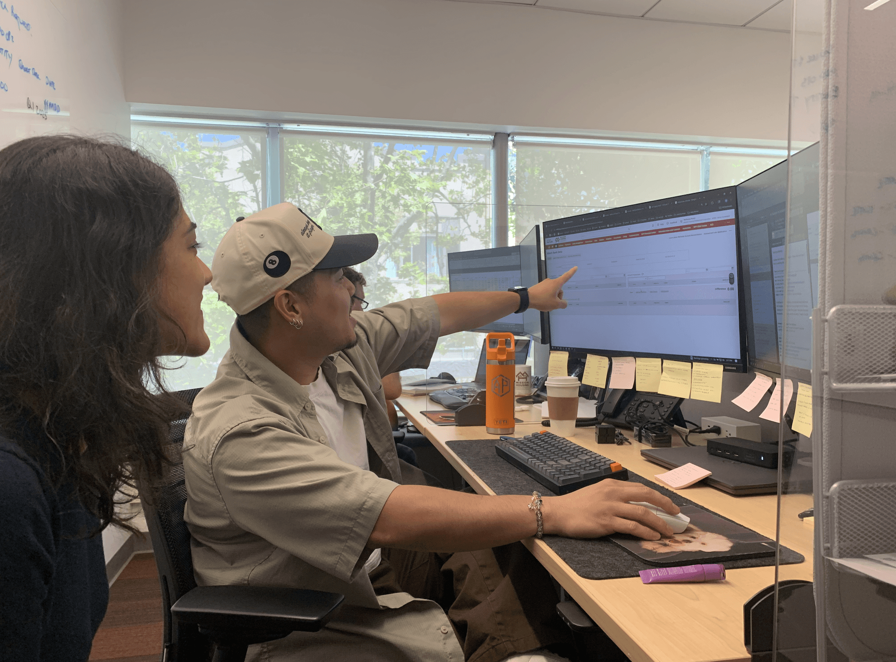
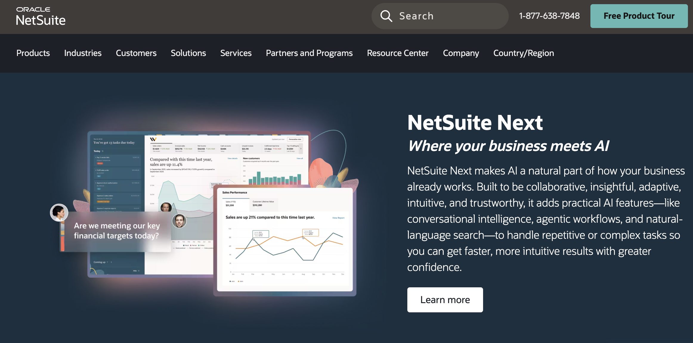
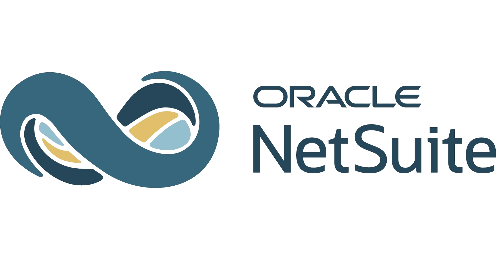
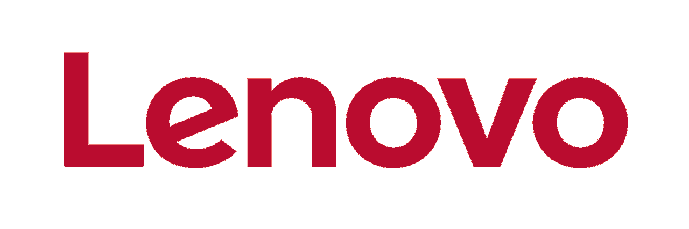
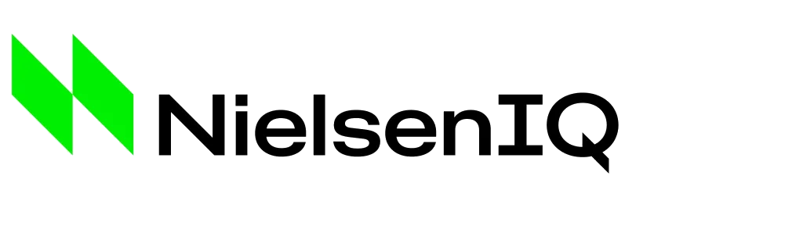
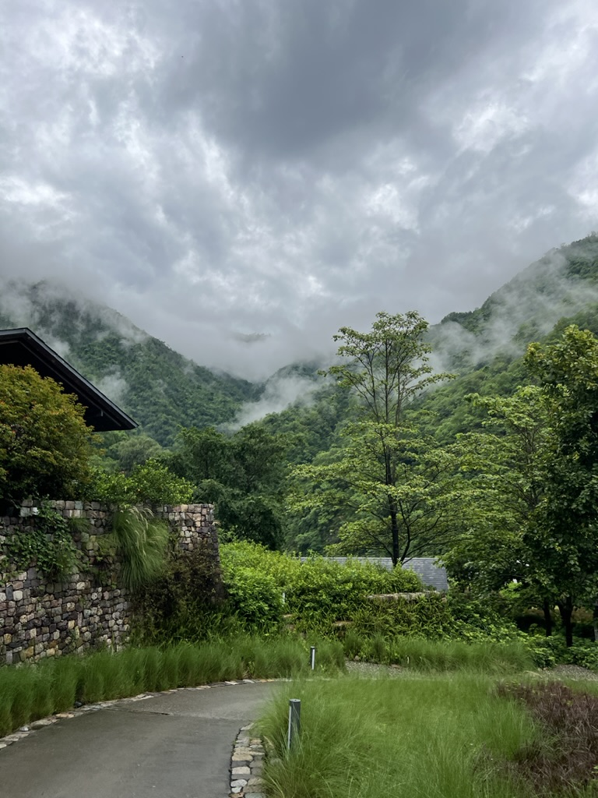
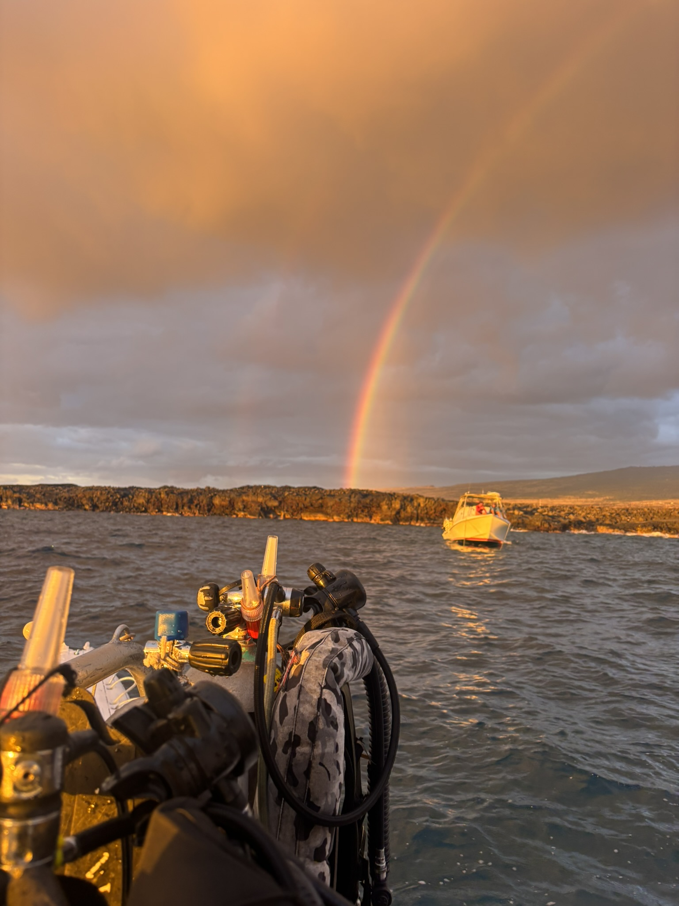

I am a UX Researcher with a graduate foundation in behavioral science. I operate at the organizational level, building research methods, frameworks, and culture that scale how teams make user-informed decisions. My current focus is on the frontier of UX and psychology: how people understand, adapt to, and interact with AI systems.
Below are four case studies that highlight my mixed-methods work in in-person research, website redesigns, and field visit programs.

Designed and facilitated in-person design feedback sessions (n=6) at Oracle NetSuite's flagship conference. Gathered qualitative insights from NetSuite customers on a Shopify Connector, which directly influenced release decisions.

Led an unmoderated card sort survey to uncover users' mental models around GenAI-generated summaries for the Customer Record page (n=23). Research insights informed the content and experience of the feature.

Built and scaled a quarterly field visit program at Redwood Shores (for 200+ employees). The program brought cross-functional cohorts into direct user contexts, driving greater user empathy across the Product Organization.

Pioneered a relationship between NetSuite's Product UX Research and Marketing organization. Led mixed-methods research on prospective users (n=14) to inform the brand's official website's redesign. Presented recommendations directly to the Marketing Group Vice President.
I designed and introduced rapid discovery frameworks adopted by 11+ cross-functional product teams, reducing discovery time by 50%. I have also established group synthesis and 'so what' workshop templates, which have been widely adopted within NetSuite's Research Org.
I value well-crafted and innovative methodology that correctly measures the intended user problem. I was the first NetSuite UXR to design an unmoderated card sort survey to collect user preferences at scale. I also designed and introduced a human-AI scale to measure AI-assisted experiences.
I think deliberately about frameworks to guide useful integration of AI in our practice. I built and contributed to a library of prompts and skills to de-bias research moderation guides and standardize metric reports. These efforts have contributed to the improvements in quality at scale. I was also an early adopter of dScout at NetSuite, and trained peers on features to improve the speed and quality of our research.
My path to UX Research tracks back to my home ground: leading behavioral and organizational research at Kenan-Flagler's Behavioral Lab, Katy Milkman and Angela Duckworth's Behavior Change for Good initiative, and Dan Ariely's Center for Advanced Hindsight.
This foundation shapes the lens I bring to my UX teams — from how I design research questions, to how I interpret what users say versus what they mean, and to how I move product teams forward. I have built my scientific rigor through academia-industry partnerships. I've led applied research projects with Lenovo, studying how users navigate laptop purchasing decisions, and with Vanguard through Penn's MBDS capstone, unpacking the behavioral barriers for long-term investing.
Currently, I am a UX Researcher at Oracle NetSuite, leading research that informs enterprise product strategy and CRM experiences. I am passionate about bringing these principles to emerging technology, especially understanding how users interact and build trust with AI systems.





I'm always happy to chat about research approaches, experiment problems together, or speak to someone passionate about the behavioral science and user experience space.
Evaluating a new troubleshooting workflow for the NetSuite Shopify Connector through in-person usability testing at Oracle's flagship annual conference — driving design improvements ahead of the December release.
NetSuite's Shopify Connector is one of the most widely used integrations in the platform. In an upcoming December 2024 release, the Connector team was introducing a new troubleshooting workflow and desired greater confidence in its usability and experience.
Our team had visionary designs in place (informed by a prior research round). My goal was to evaluate whether the solution delivered its intended user value: a clear, complete, and satisfying self-service troubleshooting experience.
My first challenge was stakeholder alignment. The team had varying priorities — some wanted to test whether the solution scaled, others focused on language and visual elements. I led a series of KUA and alignment workshops to build a shared research goal.
I then selected two complementary methods: a usability test to evaluate ease-of-use and satisfaction across the workflow, and a content highlighter activity to surface what language in the help guide was useful, missing, or unnecessary.
I designed three task flows tested in sequence, each with quantitative metrics (SEQ, UMUX-LITE, CSAT) alongside think-aloud observation:
Participants logged in and identified a connection problem with Shopify. Measured via First Click Test and SEQ.
Participants walked through the guided solution panel to resolve the error. Measured via SEQ, UMUX-LITE, and CSAT.
Participants confirmed the Shopify connection was restored. Measured via SEQ, UMUX-LITE, and CSAT.
Participants marked sections of the help guide as confusing, useful, or unnecessary — surfacing specific language improvements.
I ran a moderated pilot with an internal SME before SuiteWorld, which led to 2 design improvements and 1 task flow adjustment for smoother prototype flow and time management.
Participants understood the cause of errors and the steps to fix them, but experienced consistent friction navigating between steps.
Participants appreciated the help drawer that remained accessible as they moved between pages — and reported high overall satisfaction (CSAT: 5.75/7).
Users wanted more direct links and fewer clicks — they felt the troubleshooting path was too linear for the complexity of their workflows.
The content highlighter surfaced consistent suggestions: a bulleted format and hyperlinks would significantly improve scannability.
I led post-research align-and-assign workshops where the team reviewed findings and took ownership of next steps, which ensured accountability and momentum going into the December release.
An unmoderated closed card sort and ranking survey to identify what information users want in a GenAI-powered customer record summary — directly shaping the June 2025 feature release.
NetSuite's Customer Record is a central hub for sales representatives — where they document, manage, and review all interactions with a customer. In an upcoming June 2025 release, the team was adding a GenAI-powered summary to the page, designed to give reps a condensed view of key information and improve efficiency.
The feature addressed a known user need. But without research, the team had no clear answer to a critical question: what information do users actually want in that summary, and how should it be ordered?
Team availability was limited due to an upcoming release season. I implemented a RACI framework to set clear expectations across stakeholders, then collaborated with the PM to apply MoSCoW prioritization — distinguishing what we must know before June from what could wait for a later cycle.
Given recruitment constraints and organizational priorities, I selected a quick but high-value approach: an unmoderated survey via DScout combining a closed card sort (to learn what content users want) and a ranking question (to determine preferred order and presentation).
The survey comprised 9 questions across three areas: Customer Record usage and pain points, firmographic context, and the GenAI summary itself. I designed screening questions to help Research Ops target the right participants — NetSuite customers whose daily responsibilities tied to sales and who interacted with the Customer Record page daily or weekly.
Before launch, I ran a moderated pilot with two internal SMEs to catch interpretation issues — resulting in 1–2 wording improvements that ensured consistent understanding across respondents.
Participants sorted information types into "must have," "nice to have," and "not needed" — revealing clear consensus and disagreement areas.
Participants ordered content types by preferred prominence in the summary. I calculated weighted average ranks and variance to surface consensus preferences.
Participants described what they liked, disliked, or found missing in an example summary — adding qualitative texture to quantitative patterns.
I used DScout's agreement matrix to assess the percentage of participants placing each item in the same category — providing statistical confidence for design decisions.
68% of users identified Sales Orders, Invoices, Payments, and Balance Information as must-have — anchoring the summary for daily decision-making.
Only 28% labeled Support Cases as essential, but 72% found them valuable when present — signaling they should be included but not front-loaded.
Users consistently ranked Billings/Financials and Sales Performance highest — these should appear first in any summary layout.
No participants ranked Communication or Activity data first — contextually useful, but should not dominate the summary view.
The June release incorporated these insights directly: the backend prompt was structured to surface Financial and Performance information first, reflecting user preferences. Beyond the feature itself, this study had lasting organizational impact.
Establishing a quarterly field visit program to embed user empathy across Oracle's cross-functional teams — moving research out of the UX silo and into the organization's DNA.
One of the most persistent challenges in enterprise UX is research that generates insights but fails to change behavior across the org. Product managers, engineers, and marketers rarely have direct contact with users — leaving them to rely on secondhand summaries or their own assumptions.
The goal of this program was to change that structural problem — not just produce better research, but fundamentally change how non-researchers at Oracle experienced user empathy.
I designed and led a quarterly program where cross-functional teams — including PMs, engineers, and designers — joined structured field visits to observe and interact with real users in their working environment.
Each visit was carefully facilitated: I prepared observation guides tailored to each attendee's role so they knew what to look for, ran live debrief sessions immediately after visits while observations were fresh, and translated the raw experience into structured insights the team could act on.
Many PMs and engineers reported that field visits overturned long-held assumptions about how enterprise users actually performed tasks day-to-day.
Teams who had participated in field visits showed noticeably faster alignment during research readout sessions — they already understood the "why."
After field visits, PMs began proactively requesting user research earlier in their planning cycles — a leading indicator of cultural change.
Teams developed shared vocabulary around user needs, reducing friction in cross-functional conversations about product direction.
The program established a repeatable, scalable model for embedding user empathy across Oracle's product teams. By making field research a shared cross-functional experience rather than a UX-only activity, the program shifted how the org valued and acted on user insights.
End-to-end research to identify navigation, messaging, and conversion gaps in NetSuite's marketing website — culminating in a strategic redesign recommendation presented directly to the Marketing Group Vice President.
NetSuite's marketing website serves as the top-of-funnel entry point for enterprise buyers — a high-stakes surface where first impressions directly impact revenue. Despite significant traffic, internal stakeholders had growing concerns about whether the site was effectively communicating NetSuite's value to its target audience of mid-market and enterprise buyers.
The ask was to bring a research-driven lens to the website: understand where it was falling short, why, and what a better experience could look like.
I designed a multi-method research plan to approach the problem from three angles simultaneously.
Competitive analysis first — I conducted a systematic review of how NetSuite's direct competitors (Sage Intacct, Microsoft Dynamics, SAP Business One) structured their marketing websites, mapped their messaging hierarchies, and identified patterns in how they addressed enterprise buyer concerns around trust, complexity, and ROI.
Heuristic evaluation — I assessed the existing NetSuite site against established UX principles, documenting friction points in navigation, information hierarchy, call-to-action clarity, and page load flows that were likely causing drop-off.
User interviews — I spoke with prospective enterprise buyers and existing customers to understand how they navigated the site, what information they looked for, and where their confidence in the product either increased or eroded.
The site led with product features rather than business outcomes — misaligned with how enterprise buyers make decisions. Competitors consistently led with ROI and business transformation narratives.
The site's IA was organized by product category, but enterprise buyers think in terms of their own business problems. Navigation created friction for self-directed exploration.
Enterprise buyers — especially at larger companies — look for proof of scale and reliability before engaging sales. Case studies, certifications, and customer logos were hard to find.
Calls to action skewed heavily toward "request a demo" — a high-commitment ask for users still in early research. Lower-friction conversion paths were largely absent.
I synthesized the research into a strategic redesign recommendation organized around three core principles: lead with business outcomes not features, restructure navigation around buyer problems not product categories, and introduce a layered conversion strategy that meets buyers at their level of intent.
The recommendation included annotated wireframe concepts, a prioritized list of changes by impact vs. effort, and a competitive benchmarking summary for context.
The project culminated in a direct presentation to Oracle NetSuite's Marketing Group Vice President — a signal that research findings had clear strategic, not just tactical, value. The research reframed the conversation from "what should we redesign" to "how should enterprise buyers experience NetSuite."